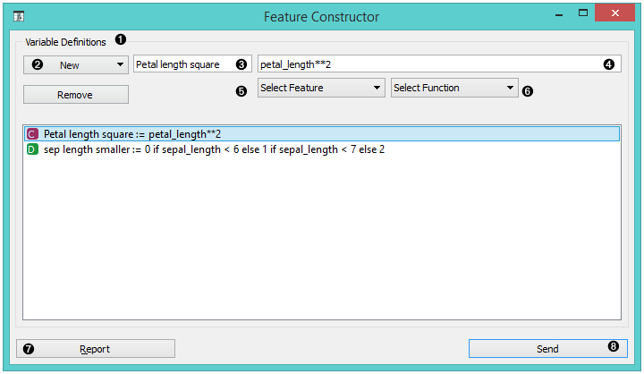
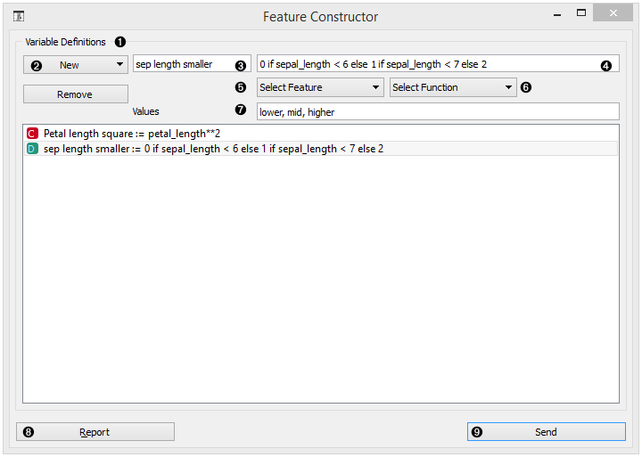
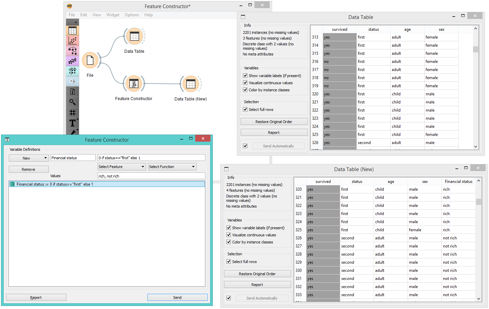

Feature Constructor
Add new features to your dataset.
Inputs
- Data: input dataset
Outputs
- Data: dataset with additional features
The Feature Constructor allows you to manually add features (columns) into your dataset. The new feature can be a computation of an existing one or a combination of several (addition, subtraction, etc.). You can choose what type of feature it will be (discrete, continuous or string) and what its parameters are (name, value, expression). For continuous variables you only have to construct an expression in Python.

- List of constructed variables
- Add or remove variables
- New feature name
- Expression in Python
- Select a feature
- Select a function
- Produce a report
- Press Send to communicate changes
For discrete variables, however, there’s a bit more work. First add or remove the values you want for the new feature. Then select the base value and the expression. In the example below, we have constructed an expression with ‘if lower than’ and defined three conditions; the program ascribes 0 (which we renamed to lower) if the original value is lower than 6, 1 (mid) if it is lower than 7 and 2 (higher) for all the other values. Notice that we use an underscore for the feature name (e.g. petal_length).

- List of variable definitions
- Add or remove variables
- New feature name
- Expression in Python
- Select a feature
- Select a function
- Assign values
- Produce a report
- Press Send to communicate changes
Example
With the Feature Constructor you can easily adjust or combine existing features into new ones. Below, we added one new discrete feature to the Titanic dataset. We created a new attribute called Financial status and set the values to be rich if the person belongs to the first class (status = first) and not rich for everybody else. We can see the new dataset with Data Table widget.

Hints
If you are unfamiliar with Python math language, here’s a quick introduction.
- +, - to add, subtract
- * to multiply
- / to divide
- % to divide and return the remainder
- ** for exponent (for square root square by 0.5)
- // for floor division
- <, >, <=, >= less than, greater than, less or equal, greater or equal
- == for equal
- != for not equal
As in the example: (value) if (feature name) < (value), else (value) if (feature name) < (value), else (value)
[Use value 1 if feature is less than specified value, else use value 2 if feature is less than specified value 2, else use value 3.]
See more here.